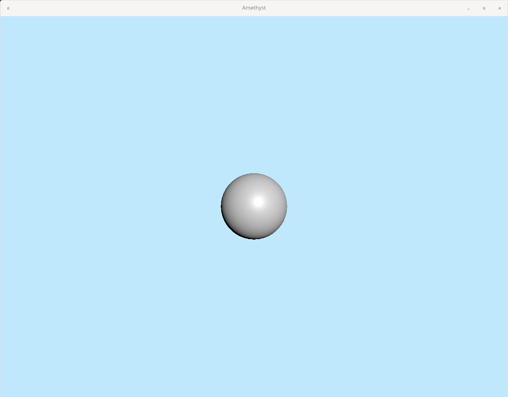

Amethyst 3D Tutorial
After having read Amethyst's official mdbook tutorial, I've been excited to start diving in to Amethyst and trying some more stuff out, particularly when it comes to 3D game development.
Unfortunately, I left the official book feeling a little lost on how to do 3D stuff, and I've seen a few other people around the web express the same feelings. The examples have a lot of good content if you dig through them, but it's a little annoying having to piece together everything you need to do to get X done. So, I figured I'd create this tutorial! Worst-case, it'll serve as a little notebook for myself to reference, but hopefully it helps someone else out as well. :)
I'll be covering a lot of the same stuff that the official book covers (at least as far as basic Amethyst engine concepts are concerned), but I'm going to structure this tutorial a little differently than the book does. Instead of describing a lot of the basic concepts up front and then making a game with those concepts afterwards, I'm going to inline all of those explanations, discussing the concepts right before you use them.
If you want to, feel free to read the Amethyst book now (especially everything up to and including chapter 3: "Concepts") to get a feel for the Amethyst ecosystem. My goal is to eventually cover everything that the book does, though, so if you want to skip it and dive right in to 3D game development, I hope this tutorial explains everything well enough.
Also, as a side-note, I'm going to postpone the use of assets and config files until much later in this tutorial compared to the book, because I think it makes it easier to understand what's going on in the Amethyst ecosystem that way. I will be covering that stuff later in the tutorial, so don't fear!
Disclaimer
I'm still very much a noob at Amethyst, so if you notice something that I misunderstood, feel free to send me an issue or pull request on this tutorial's GitHub repo. Same thing for typos and other errors.
This tutorial assumes you're already familiar with Rust development. If you aren't, I'd recommend reading a little bit of the Rust book and playing around with Rust a little.
Also, I'm going to target Amethyst 0.12.0 in this tutorial. Hopefully the concepts will carry over to future versions. I'll update this book on a "best-effort" (read: "if I feel like it and have time to do so") basis -- feel free to send those issues and PRs to prod me though!
What game are we implementing here?
"Back in the day"™, I played a decent amount of flash games. But now, flash is dead. RIP.
One of those games was Cubefield (website) (youtube video example), a very simple obstacle-avoiding game (in the genre of "endless running" games), similar to Race The Sun and others.
I figure Cubefield would be a pretty simple target for a 3D tutorial: the objective of the game is pretty simple, the shapes are all pretty simple, and even the controls are simple. Even so, we should be able to cover a lot of the concepts that you need to go off and create your own 3D game.
Additional resources
Here's some other resources that you might find useful in developing games with Amethyst:
- Website
- the "Documentation" page lists a lot of the same stuff that I have here
- the Amethyst book
- API reference
- GitHub repo
- especially the
examplesdirectory
- especially the
- Discord chat: A lot of game devs (including a lot of the people who work on Amethyst) hang out on Discord, so it might be a good place to ask questions.
- Discourse forums: Alternatively, you could also ask questions in the Discourse forums.
Creating an empty game
In this chapter, I'm going to go from "having no project at all" to "having a game that does nothing except spawn a blank Amethyst window". Getting this basic game skeleton stuff out of the way will allow us to focus on concepts and game functionality in future chapters.
Create a Rust project
First, you need to create a Rust project.
cargo new cubefield
Phew, that was a lot of work.
Set up Amethyst dependencies and the main function
First thing's first, you need to add amethyst to your project's dependencies. You also need to choose a backend:
vulkanfor Linux and Windows (and anything else that supports Vulkan)metalfor Mac OS Xdx12(for DirectX) is not currently available in Amethyst, but might be one day.
Since I'm on Linux, I'll be using vulkan.
Cargo.toml:
[package]
# ...
[dependencies]
amethyst = {version="0.12.0", features=["vulkan"]}
To make a few things easier, we're also going to change the function signature of main. Most Amethyst games use the return type amethyst::Result<()>, so that you can use ? to automatically exit if various setup things fail.
main.rs:
fn main() -> amethyst::Result<()> { Ok(()) }
Go ahead and cargo run that, and wait for Cargo to pull down the giant dependency tree and compile it. Depending on your computer's specs, it might take a while.
If everything worked, congrats! You now have some code that depends on Amethyst. But it doesn't do anything yet...
Create a logger
Setting up a logger allows us to see what's going on in our game while it's running. It's particularly useful while you're still laying the groundwork of your game, as we are here: any debug, info, and warning message from within the Amethyst ecosystem will be printed out to the screen.
fn main() -> amethyst::Result<()> { // Set up the Amethyst logger amethyst::start_logger(Default::default()); Ok(()) }
As the Amethyst book says, there are many ways to configure the logger. Check out the API reference for more info. The default setup will work just fine for this tutorial, though.
Create an Application object
The API reference describes the Application object pretty well:
An Application is the root object of the game engine. It binds the OS event loop, state machines, timers and other core components in a central place.
Since Application functions as the root of the game, Amethyst does not need to use any global variables. Within this object is everything that your game needs to run.
Every Amethyst game creates an Application, so that seems like a good place to start.
In order to create an Application, we first have to create a few bits of information that it depends on:
- A
PathBufto an assets directory - An initial
Stateto start the game in - A
GameDataBuilderobject;GameDataholds a bunch of game logic and other stuff that your game needs during runtime.
Assets directory
First, we need to create a PathBuf that represents an assets directory. Assets are anything that your game loads before/during game runtime -- things like 3D models, textures, audio, sprites, etc. Pretty much any game of any substantial size will have an assets directory... but we won't need to have one for quite a while in this tutorial! Let's just give it a sane directory name (assets) for now, and I'll describe how assets work when we start using them.
use amethyst::utils::application_root_dir; fn main() -> amethyst::Result<()> { // (logger) // Set up the assets directory (PathBuf) let app_root = application_root_dir()?; let assets_dir = app_root.join("assets"); Ok(()) }
By the way, you don't actually need to create the assets/ directory now (in the root directory of your project, at the same level as src/), but you can if you want.
Create an initial State
Amethyst has a neat style of state management built-in called a "pushdown automaton", which you can read a little more about on Wikipedia and Amethyst's wiki page. It's a little different than the (maybe?) more-common "finite-state machine", but pushdown automatons are a little more powerful.
Regardless, we won't be needing the features of the state management system quite yet. Simple games like this can have just one main "game" state; once you want to start implementing main menus, pause menus, etc, then you'll probably want to start reaching for state management. Let's just satisfy Application for now.
The easiest way to create a State in Amethyst is to define a unit struct and implement the SimpleState trait for it:
// (other includes) use amethyst::SimpleState; struct GameState; impl SimpleState for GameState {} fn main() -> amethyst::Result<()> { // (...) }
Create a GameDataBuilder
GameData is the "central repository" for a bunch of stuff your game needs during runtime, and GameDataBuilder is a convenient way to build it. For now, we don't need anything in the GameData, so we can just create a builder with nothing in it. We'll be adding stuff to it very soon (before the end of this chapter, even).
// (other includes) use amethyst::GameDataBuilder; // (GameState) fn main() -> amethyst::Result<()> { // (logger) // (assets directory) // Set up an empty (for now) GameDataBuilder let game_data = GameDataBuilder::default(); Ok(()) }
Create an Application, and run our game!
We're finally ready to create an Application!
// (other includes) use amethyst::Application; // (GameState) fn main() -> amethyst::Result<()> { // (logger) // (assets directory) // (GameDataBuilder) // Run the game! let mut game = Application::new(assets_dir, GameState, game_data)?; game.run(); Ok(()) }
Go ahead and cargo run this to make sure everything's working. You should just see a few log messages print out before Amethyst dumps you into an infinite loop. Ctrl+C.
Spawn a window
Alright, now we need a window for our game.
To do this, we're going to bring in a "Bundle" that implements a lot of the stuff for us. In general, you can think of bundles as a cross-section of game functionality that implements some feature for you. It's possible to (and you will likely want to eventually) create your own bundles, but that's a bit far away for now.
In particular, we're going to be using the RenderingBundle here, which (along with some bundle plugins) implements a bunch of rendering stuff for us, including window creation itself.
// (other includes) use amethyst::renderer::plugins::RenderPbr3D; use amethyst::renderer::plugins::RenderToWindow; use amethyst::renderer::types::DefaultBackend; use amethyst::renderer::RenderingBundle; use amethyst::window::DisplayConfig; // (GameState) fn main() -> amethyst::Result<()> { // (logger) // (assets directory) // Set up the display configuration let display_config = DisplayConfig { title: "Amethyst".to_string(), dimensions: Some((1024, 768)), ..Default::default() }; // Set up the GameDataBuilder let game_data = GameDataBuilder::default() .with_bundle( RenderingBundle::<DefaultBackend>::new() .with_plugin( RenderToWindow::from_config(display_config) .with_clear([0.529, 0.808, 0.98, 1.0]), ) .with_plugin(RenderPbr3D::default()), )?; // (Application) Ok(()) }
That's a lot of new code, so let's break it down line-by-line.
- The DisplayConfig is what will eventually get used by the
RenderToWindowplugin to set up our window for us. Here we're setting the window's title and dimensions explicitly, then using the defaults for every other field in the struct. - We already had
GameDataBuilderbefore, but now we're adding a bundle to it.with_bundleis the function you use to add a bundle. RenderingBundleis the bundle we're using to set up rendering. As far as bundles go,RenderingBundleis a pretty complex one: it delegates most of its work to plugins, which lets the user set up their rendering system as they see fit. It's also parameterized on a "Backend", but since you set up your rendering backend inCargo.toml, you can just useDefaultBackendhere.- Since
RenderingBundledelegates most of its work to plugins, we need to give it some plugins.with_pluginis the function you use to add plugins, at least forRenderingBundle. - The first plugin we're using is
RenderToWindow, which sets up a window for us and allows us to draw to it. You have to supply aDisplayConfigfor it to use, which is what we did up above. We're also specifying a "clear value", which is what the renderer uses as a "background" to your game when there was nothing in front of it to render.- The format for the color is
[Red, Green, Blue, Alpha]. You'll probably want to set alpha to1.0, and the rest of the colors are up to you. Here I made light sky-blue color. - If you don't specify a clear value, the renderer won't clear the screen, just drawing over the last frame directly. It'll look similar to the classic Windows lagging graphics glitch. Try commenting that line of code out when you have more of a game to work with!
- The format for the color is
- The second plugin is
RenderPbr3D, which is a Physically Based Rendering engine that we'll be using for rendering our game.
Go ahead and cargo run that. You should get a blank window, filled with whatever your clear color is.
Final code for this chapter
The final code for this chapter can be found here.
Entity and Component
[TODO: maybe re-write this a little better -- suggestions welcome]
[TODO: also maybe move this page to the Appendix section?]
We're almost ready to create shapes for our game and actually draw something, but first we should understand a little bit about what's going on under the hood in Amethyst when you "create" something in your game world.
At its core, Amethyst is an entity-component-system (ECS) style game engine. Although ECS is kind of a paradigm of creating "objects", it's quite different from the "object-oriented programming" (OOP) style that's commonly taught in schools.
An entity represents a single object in your game world. To the programmer, these are typically unnamed; i.e. you don't "bind" them to a variable name, the ECS framework will store them for you.
Under the hood, an entity is just a number representing its entity ID (and a little bit of extra data for internal ECS use which you don't have to worry about yet). You can't tell the game engine anything else about the entity, like "what kind of object is this?" or "how do I render this entity?" or anything else. It's just a number, that you don't even store yourself.
So how do you use entities to build up objects for a game?
Components allow you to store additional information about an entity, like "this is a monster", "this object is red", or "this object is located at (35.0, 1.0, 0.0)".
In ECS, each different type of component is stored in its own storage. Let's say you had some RPG game -- all of the HPs for all of the different monsters and players in the game would be stored in some "HP storage"; all the MPs in their own "MP storage", all of the items in their own "Item storage", and so on.
In OOP, you would store all of the data about your monsters in one struct per monster (its HP, its MP, a pointer to its mesh/texture/etc, its location in the world, etc).
The reason for this entity/component split in ECS is that it allows you to store and retrieve your objects more efficiently, with noticeable effects on game performance. For example, if you cast some spell that did X damage to every monster in the world:
- In OOP, you'd have to load all of the structs for all of the monsters in the game. This would be terrible for cache performance, because you're pulling in a bunch of data you're ultimately not going to be using right now.
- In ECS, you just have to load the "HP storage" for all of the monsters -- you're using all of the data you just loaded, and only that data.
In Amethyst's flavor of ECS, each instance of a component modifies exactly one entity. Each entity doesn't know anything about which components modify it. Here's a little example:
Entities PositionComponent TypeComponent HpComponent
0 [0] (1.0, 2.0, 0.0) [0] Player [0] 100
1 [1] (5.0, 3.0, 0.0) [1] Monster [1] 50
2 [2] (10.0, -2.0, 0.0) [2] Building [3] 75
3 [3] (0.0, 5.0, 0.0) [3] Monster
^ ^
(entity number) (component value)
There are four entities in this tiny game: one player, one building, and two monsters. The positions for each entity are given in the table. The player (entity 0) has 100 HP, while the two monsters (entities 1 and 3) have 50 and 75 HP. Note that the building doesn't have any HP; every component is optional for each entity, and it doesn't really make sense for a building to have HP, so it doesn't have any HpComponents attached to it.
If you were just given entity 2, you wouldn't be able to know anything about it without scanning all of your component storages. Luckily, you never need to go from entity -> component, because you don't really do things this way in ECS.
One neat thing about ECS is it allows you to do "joins" which are kind of similar to how relational databases work. If you want to modify all of the monsters' HPs, you would do a join on TypeComponent and HpComponent (which means that any entity that doesn't have both a type and an HP will be automatically filtered out), then you go through the results of your join and update the HP data if the Type is "Monster". If you also gave each monster a ColorComponent, you could join on (TypeComponent, ColorComponent, and HpComponent), and update only the HPs of the entities that are both Monster and Blue. You can start to imagine some pretty cool functionality this enables you to do that would be pretty messy (and perhaps inefficient) in an OOP-style game engine!
Entities and components in Amethyst
To declare a component in Amethyst, you simply create a data structure (either a struct or an enum) that will hold the information that the component conveys, then you implement the Component trait for that data structure.
#![allow(unused)] fn main() { use amethyst::ecs::{Component, DenseVecStorage}; // Type component enum Type { Player, Monster, Building, } impl Component for Type { type Storage = DenseVecStorage<Self>; } // HP component struct Hp { hp: u32, } impl Component for Hp { type Storage = DenseVecStorage<Self>; } }
Remember that each component has its own storage -- the type that you give type Storage tells Amethyst how you want to actually store those components in memory. There are a few different types of storage to choose from, but DenseVecStorage is a good default type to use if you don't have any good reasons to use something else.
Usually, when you create an entity, you also give it any components that describe it. It'll end up looking something like this:
#![allow(unused)] fn main() { world.create_entity() // Create a new entity .with(Type::Player) // Create a Type component, and associate it with this entity) .with(Hp{hp: 100}) // Create an HP component, and associate it with this entity) .build(); }
where "world" is the thing that keeps track of all your entities and components (and other things, which we'll see later).
More reading
You can also read up on Entity and Component at the Amethyst book's page on this topic.
Drawing something on the screen
Alright, I think we're ready to try actually drawing something on the screen.
We're going to be using Physically based rendering (PBR) for this game. It's pretty standard, and what other 3D engines (Unreal, Unity, Blender, etc) use to render stuff.
In PBR, you need three things at minimum to draw stuff:
- A camera to view the world from
- Some objects to render
- A light source (technically you don't need this, but everything will be 100% black if you don't)
So, let's just go in that order. All three of these things will be represented by standard entities, with various different components attached to them.
Setup
Before we can set any of those things up, though, we need some place in our code to actually initialize those objects, so that Amethyst's ECS framework knows about them.
Amethyst states have a few different methods that run at different times and different intervals during the lifecycle of the state. Since we are forced to create an initial state to create an Application, we might as well use one of these methods to do the initialization work in.
Since we only need to initialize our three entities once per game, the on_start method seems like a good place to do this. on_start runs only once when we enter that state, which is exactly what we need.
// (other includes) use amethyst::StateData; use amethyst::GameData; struct GameState; impl SimpleState for GameState { fn on_start(&mut self, state_data: StateData<'_, GameData<'_, '_>>) { // More code will go here } } fn main() -> amethyst::Result<()> { // (...) }
When Amethyst calls on_start (or any of the other methods), it passes in some "state data" that you can use for context into the rest of the game (see StateData). We don't really care about the lifetimes of the references inside the StateData for now, so we just use '_ to tell Rust "whatever you give us is fine with us".
Since we will ultimately want to create entities within our game (to create our camera, lights, and spaceship), we are mostly concerned with the world field within StateData; this is the same world that I mentioned at the end of the last chapter.
Creating a camera
The first step is to create a camera, which allows us to see all the objects we crate in our game.
To do this, we're going to use the Camera module from renderer.
Let's make a brand new function called initialize_camera:
// (other includes) use amethyst::prelude::World; use amethyst::renderer::Camera; // (GameState) // (fn main) fn initialize_camera(world: &mut World) { world.create_entity() .with(Camera::standard_3d(1024.0, 768.0)) .build(); }
Since we're making a 3D game, we're going to use standard_3d.
1024.0 and 768.0 are just the dimensions of our window, which we defined in our DisplayConfig. You can refactor that into some constants if you like; I'll do some refactoring in an upcoming chapter.
The camera follows our standard entity and component setup I mentioned earlier:
- Create a nameless entity in our game world with
world.create_entity() - Add components to the entity; in this case, we're creating a
Cameracomponent and attaching it to this entity - Build the entity to finalize everything and actually add it to the world
So the camera is basically the same as any other entity/component you're going to make in your game; the only difference is that Camera does some magic rendering-related stuff in the background.
Now, we need to hook that function up to our on_start method that we defined earlier:
#![allow(unused)] fn main() { fn on_start(&mut self, state_data: StateData<'_, GameData<'_, '_>>) { initialize_camera(state_data.world); } }
If you cargo run that right now, you won't notice any difference. That's because we don't have any shapes for the camera to view! Let's make one now.
Creating an object to render
For now, we're just going to create a sphere so we understand what's going on. We'll modify it later to create the actual things in our game, like the spaceship and the cubes.
Like the camera, the sphere is also going to be a standard entity with components. Let's just follow the same pattern as we did with the camera to create it.
Create a new function called initialize_sphere:
#![allow(unused)] fn main() { fn initialize_sphere(world: &mut World) { world.create_entity() .with( /*???*/ ) .build(); } }
Call this function in on_start:
#![allow(unused)] fn main() { fn on_start(&mut self, state_data: StateData<'_, GameData<'_, '_>>) { initialize_camera(state_data.world); initialize_sphere(state_data.world); } }
Now we need to figure out how to give the sphere a "shape" to be rendered. In PBR, we need two things for our object to be renderable:
- A mesh, which gives our object a shape in 3D space
- A material, which tells the rendering engine how to actually render that shape.
In the next chapter I'll dive into these things with much more detail, but for now I'll just throw a blob of code at you.
Mesh
#![allow(unused)] fn main() { let mesh = world.exec(|loader: AssetLoaderSystemData<'_, Mesh>| { loader.load_from_data( Shape::Sphere(100, 100) .generate::<(Vec<Position>, Vec<Normal>, Vec<Tangent>, Vec<TexCoord>)>(None) .into(), (), ) }); }
Here we're generating the sphere mesh with Shape::Sphere(100, 100). There are a few basic shape generators to choose from, in case you want to mess around with your own shapes. The 100, 100 arguments are basically just the number of vertexes to generate the sphere with; more vertexes means a finer-"resolution" sphere. 100 is probably overkill, but it works for us.
Material
#![allow(unused)] fn main() { let material_defaults = world.read_resource::<MaterialDefaults>().0.clone(); let material = world.exec(|loader: AssetLoaderSystemData<'_, Material>| { loader.load_from_data( Material { ..material_defaults }, (), ) }, ); }
We're basically generating a default material. We'll learn about materials and play around with them in the next chapter.
Putting it all together
We have a mesh, and we have a material. They can both be treated as components, so we can simply add them to the entity.
#![allow(unused)] fn main() { world.create_entity() .with(mesh) .with(material) .build(); }
The full function should look like this:
#![allow(unused)] fn main() { fn initialize_sphere(world: &mut World) { let mesh = world.exec(|loader: AssetLoaderSystemData<'_, Mesh>| { loader.load_from_data( Shape::Sphere(100, 100) .generate::<(Vec<Position>, Vec<Normal>, Vec<Tangent>, Vec<TexCoord>)>(None) .into(), (), ) }); let material_defaults = world.read_resource::<MaterialDefaults>().0.clone(); let material = world.exec(|loader: AssetLoaderSystemData<'_, Material>| { loader.load_from_data( Material { ..material_defaults }, (), ) }, ); world.create_entity() .with(mesh) .with(material) .build(); } }
Okay, we have a camera, and we have a renderable object. We don't have a light source yet, but we should still be able to see some shape, right? Let's cargo run the project and see what happens!

Wait, what? Shouldn't we see a black sphere, at least?
The problem turns out to be that the camera is effectively spawned inside the sphere, which means it won't render the sphere. We need to move stuff around in our scene for things to make sense.
Transforms
To move stuff around, we're going to use the TransformBundle.
Let's add it to our GameDataBuilder:
#![allow(unused)] fn main() { use amethyst::core::{Transform, TransformBundle}; let game_data = GameDataBuilder::default() .with_bundle(TransformBundle::new())? // other bundles }
Now, let's move our camera back a little bit so we can see the outside of the sphere.
#![allow(unused)] fn main() { fn initialize_camera(world: &mut World) { let mut transform = Transform::default(); transform.set_translation_xyz(0.0, 0.0, 10.0); world.create_entity() .with(Camera::standard_3d(1024.0, 768.0)) .with(transform) .build(); } }
By default, the camera faces "downwards" in the negative Z direction. So if we move it "upwards" (positive Z) -- which is what we did with set_translation_xyz -- we should be able to see something sitting at (0.0, 0.0, 0.0).
Transforms are treated as yet another component, so you can just attach them to your entity with with().
Finally, let's make sure the sphere is sitting at (0.0, 0.0, 0.0), and we should be able to see it.
#![allow(unused)] fn main() { // ... let mut transform = Transform::default(); transform.set_translation_xyz(0.0, 0.0, 0.0); world.create_entity() .with(mesh) .with(material) .with(transform) .build(); }

Heeey, look at that. Pretty neat!
Create a light source
The final thing we need to do for a "complete" PBR system is create a light source. You can think of this as a lightbulb or the sun -- light is generated from the source, and scatters out from the source. When light hits an object like our sphere, it bounces off that object in a bunch of different directions. Some of that light bouncing off the object will bounce towards our camera. Then, the camera picks it up and renders what it sees for us on the screen. (This is simplifying how things actually work in PBR quite a bit, but the concepts hold.)
The shape's material affects how the light bounces off of it. You can change a whole bunch of stuff about the material, and the results will be a wide variety of changes to how the shape is rendered on screen. We'll explore materials in the next chapter.
In our scene, the shape is blocking the background, so the renderer will draw something there. However, we don't have any light source to generate light to bounce off the shape, so the renderer will just render it as 100% black.
Our choice of a light blue clear color makes the scene above a little unintuitive: there's actually no "light" coming from the background, it's just what we draw if we have nothing else to render. It would make a little more sense if we chose a black clear color, but whatever; let's just create a light source and see what happens!
Like the camera and the sphere, the light source is just another ordinary entity with some components attached.
#![allow(unused)] fn main() { use amethyst::renderer::light::{Light, PointLight}; use amethyst::renderer::palette::rgb::Rgb; fn initialize_light(world: &mut World) { let light: Light = PointLight { intensity: 10.0, color: Rgb::new(1.0, 1.0, 1.0), ..PointLight::default() }.into(); let mut transform = Transform::default(); transform.set_translation_xyz(5.0, 5.0, 20.0); world .create_entity() .with(light) .with(transform) .build(); } }
The Light component is a PointLight, with intensity 10.0 and a completely white hue. We're moving the light behind the camera (20.0 in the Z direction), and a little off-center.
Now, just add it to the game:
#![allow(unused)] fn main() { struct GameState; impl SimpleState for GameState { fn on_start(&mut self, state_data: StateData<'_, GameData<'_, '_>>) { initialize_camera(state_data.world); initialize_sphere(state_data.world); initialize_light(state_data.world); } } }

Now it actually looks like a sphere.